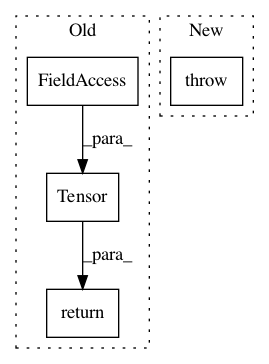

f3a63d2535c2e188d4af85c9a8c2fbcd434ba557,autokeras/preprocessor.py,DataTransformer,transform_test,#DataTransformer#Any#Any#Any#,82
Before Change
return DataLoader(dataset, batch_size=batch_size, shuffle=True)
def transform_test(self, data, targets=None, batch_size=None):
common_list = [Normalize(torch.Tensor(self.mean), torch.Tensor(self.std))]
compose_list = common_list
dataset = self._transform(compose_list, data, targets)
if batch_size is None:
batch_size = Constant.MAX_BATCH_SIZE
batch_size = min(len(data), batch_size)
return DataLoader(dataset, batch_size=batch_size, shuffle=False)
def _transform(self, compose_list, data, targets):
data = data / self.max_val
data = torch.Tensor(data.transpose(0, 3, 1, 2))
After Change
@abstractmethod
def transform_test(self, data, target=None, batch_size=None):
raise NotImplementedError
class TextDataTransformer(DataTransformer):
In pattern: SUPERPATTERN
Frequency: 3
Non-data size: 4
Instances
Project Name: keras-team/autokeras
Commit Name: f3a63d2535c2e188d4af85c9a8c2fbcd434ba557
Time: 2018-10-19
Author: lin.yang@tamu.edu
File Name: autokeras/preprocessor.py
Class Name: DataTransformer
Method Name: transform_test
Project Name: keras-team/autokeras
Commit Name: f3a63d2535c2e188d4af85c9a8c2fbcd434ba557
Time: 2018-10-19
Author: lin.yang@tamu.edu
File Name: autokeras/preprocessor.py
Class Name: DataTransformer
Method Name: transform_train
Project Name: PetrochukM/PyTorch-NLP
Commit Name: 6a5916968838686e332fb68a10cb30222843fbd9
Time: 2018-04-26
Author: florian.joh.schaefer@gmail.com
File Name: torchnlp/word_to_vector/pretrained_word_vectors.py
Class Name: _PretrainedWordVectors
Method Name: __getitem__